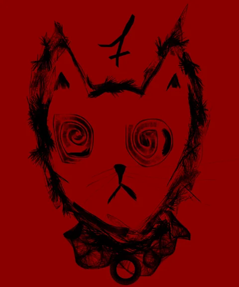
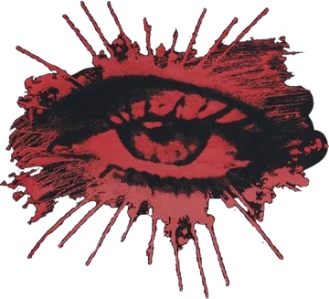
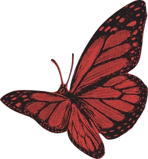
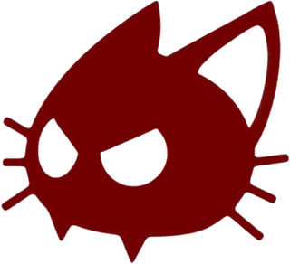

print em breve
Jane Doe / OS ★ favorito
Interface de investigação que imita um sistema operacional fictício.
HTML, CSS, JavaScript
última atualização: 26 out 2026

>> RJ · SEC / DEV / POESIAEu sou só uma escritora. E se código também pudesse virar poesia?
Comecei a estudar tecnologia por conta própria, sem formação universitária na área e praticamente do zero em programação.
Comecei por HTML, CSS e JavaScript, passei por Python e Java, e fui percebendo que não queria aprender só a fazer sites. Queria entender o que estava acontecendo por trás deles.
Foi daí que a segurança da informação ganhou foco: Linux, redes, segurança web, sistemas, CTFs, red team e monitoramento.
estudando agora ✦ segurança web ✦ linux ✦ wazuh / SIEM ✦ CTFs no TryHackMe e Hack The Box ✦ python e flask ✦ .777 ✦
Interface de investigação que imita um sistema operacional fictício.
HTML, CSS, JavaScript
Experiência interativa no navegador, em formato de ficção interativa.
HTML, CSS, JavaScript
Aplicação web voltada à segurança.
Python, Flask


